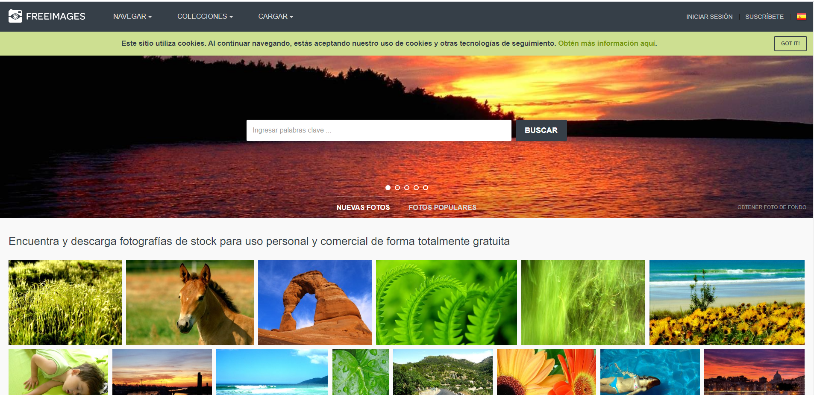
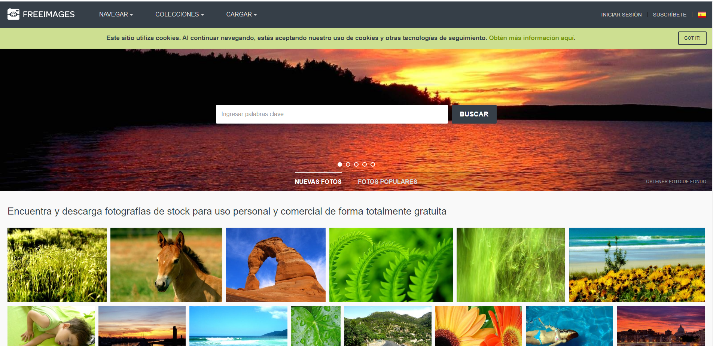

Para hacer recursos más profesionales puedes descargar imágenes de diversos sitios. En Mejores Bancos de Imágenes y en Lista de Banco de imágenes. tendrás acceso a más de 40 sitios.


Para hacer recursos más profesionales puedes descargar imágenes de diversos sitios. En Mejores Bancos de Imágenes y en Lista de Banco de imágenes. tendrás acceso a más de 40 sitios.


Obra publicada con Licencia Creative Commons Reconocimiento Compartir igual 4.0